The Vectorization of MOM6
Marshall Ward
2021-04-21
Peak Performance
\[W \le N \times f \times I_\text{vec}\]
| \(W\) | FLOPs per second ("work") |
| \(N\) | # of CPUs |
| \(f\) | Cycles per second |
| \(I_\text{vec}\) | FLOPs per cycle |
CPU Scaling
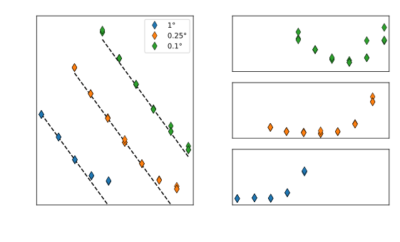
MOM5 scaling in ACCESS-OM2
Fluid Dynamics Scaling
Tension between local (hyperbolic) solvers
\[\begin{aligned} \frac{\partial \mathbf{u}}{\partial t} &= -\mathbf{u} \cdot \nabla \mathbf{u} - \nabla p + \mathbf{f} \\ \end{aligned}\]
and global (elliptic) solvers
\[\begin{aligned} \nabla^2 p &= -\nabla \cdot \left( \mathbf{u} \cdot \nabla \mathbf{u} \right) + \nabla \cdot \mathbf{F} \\ &\approx \nabla \cdot \mathbf{F} \text{(?)} \\ \end{aligned}\]
... unless you can cheat (aka oceanography)
Clock Speed
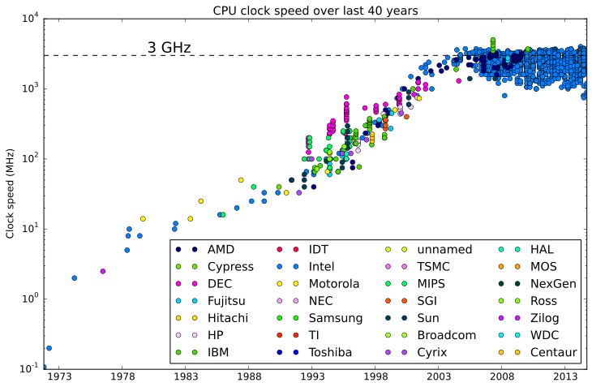
Clock Speed vs # of Cores
Using more cores further reduces clock speed!
Vectorization
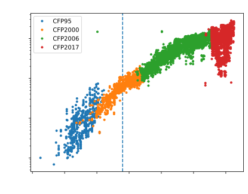
Intel normalization

Vector Instructions
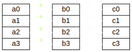
| Instr. | Size | GFLOP/s | Obs. (Gaea) |
|---|---|---|---|
| SSE | 4 SP/2 DP | 14.4 | 14.394 |
| AVX | 8 SP/4 DP | 28.8 | 28.790 |
Fused-Multiply Add
FMA: \(d \leftarrow a \times b + c\)
| Instr. | Op | GFLOP/s | Obs. |
|---|---|---|---|
SSE |
Add FMA |
14.4 28.8 |
14.394 28.790 |
AVX |
Add FMA |
28.8 57.6 |
28.788 57.580 |
\(\text{rd}(\text{rd}(a \times b) + c)\) vs \(\text{rd}(a \times b + c)\)
Concurrency
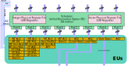
2 instr. per cycle, even FMA
Peak
| Instr. | Op | GFLOP/s | Obs. |
|---|---|---|---|
SSE |
Add FMA 2x FMA |
14.4 28.8 57.6 |
14.394 28.790 57.580 |
AVX |
Add Add+Mul FMA 2x FMA |
28.8 57.6 57.6 115.2 |
28.788 57.580 57.580 115.160 |
Array Ops
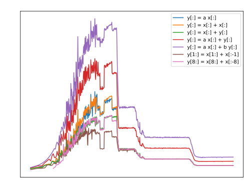
Array Ops
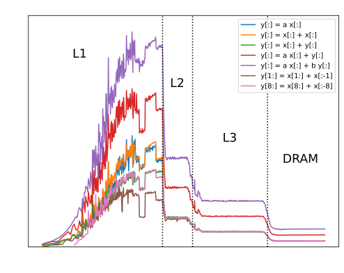
Arrays @ AMD
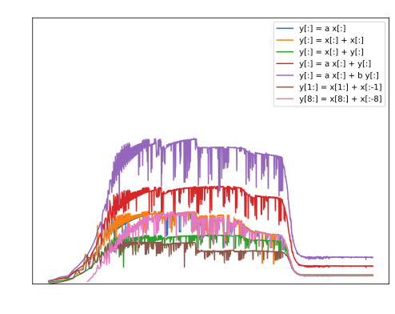
Arrays @ AMD
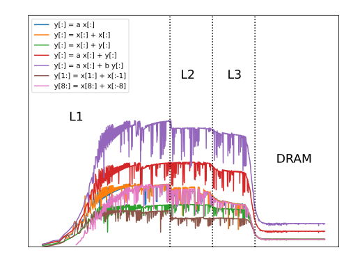
Arithmetic Intensity
| Expression | AI | Max GFLOP/s |
|---|---|---|
| y[:] = a x[:] | \(\frac{1}{4}\) | 26.43 |
| y[:] = x[:] + x[:] | \(\frac{1}{4}\) | 24.98 |
| y[:] = x[:] + y[:] | \(\frac{1}{8}\) | 18.34 |
| y[:] = a x[:] + y[:] | \(\frac{1}{4}\) | 37.58 |
| y[:] = a x[:] + b y[:] | \(\frac{3}{8}\) | 51.08 |
| y[:] = x[1:] - x[:-1] | \(\frac{1}{8}\) | 14.07 |
| y[:] = x[8:] - x[:-8] | \(\frac{1}{8}\) | 18.39 |
MOM6 sample config
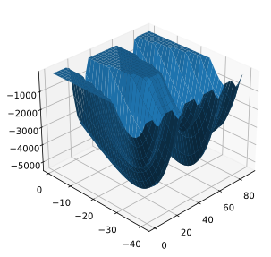
32 × 32 grid, 75 level
- ~76k / field
288 steps (3 day, \(\Delta t = 900s\))
"Benchmark" configuration:
- Split barotropic
- Biharmonic visc
- Thickness diffusivity
- Bounded Coriolis
- ??
Profiling with perf
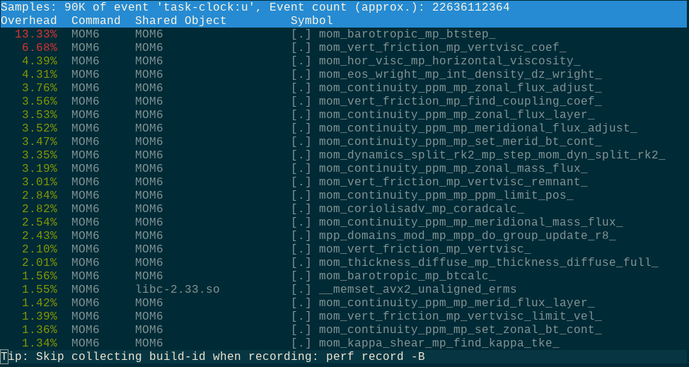
Profiling with perf
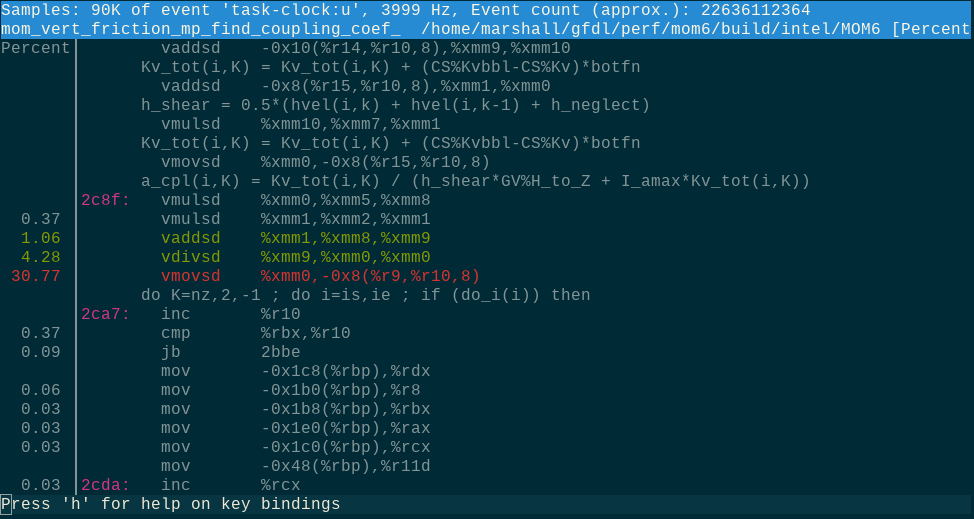
perf stat
Performance counter stats for '../../build/intel/MOM6':
22397.33 msec task-clock:u # 0.986 CPUs utilized
84092282119 cycles:u # 3.755 GHz
45781959071 stalled-cycles-backend:u # 54.44% idle cycles
11481435369 l2_cycles_waiting_on_fills:u # 512.625 M/sec
59207044954 fp_ret_sse_avx_ops.all:u # 2643.487 M/sec
22.709657811 seconds time elapsed
22.232343000 seconds user
0.116333000 seconds sys
MOM6 FLOP rates
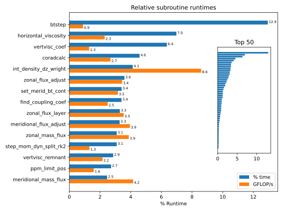
Horizontal Viscosity
do j=Jsq,Jeq+1 ; do i=Isq,Ieq+1
if ((CS%Smagorinsky_Kh) .or. (CS%Smagorinsky_Ah)) then
Shear_mag = sqrt(sh_xx(i,j)*sh_xx(i,j) + &
0.25*((sh_xy(I-1,J-1)*sh_xy(I-1,J-1) + sh_xy(I,J)*sh_xy(I,J)) + &
(sh_xy(I-1,J)*sh_xy(I-1,J) + sh_xy(I,J-1)*sh_xy(I,J-1))))
endif
if ((CS%Leith_Kh) .or. (CS%Leith_Ah)) then
if (CS%use_QG_Leith_visc) then
vert_vort_mag = MIN(grad_vort_mag_h(i,j) + grad_div_mag_h(i,j),3.*grad_vort_mag_h_2d(i,j))
else
vert_vort_mag = (grad_vort_mag_h(i,j) + grad_div_mag_h(i,j))
endif
endif
if (CS%better_bound_Ah .or. CS%better_bound_Kh) then
hrat_min = min(1.0, min(h_u(I,j), h_u(I-1,j), h_v(i,J), h_v(i,J-1)) / &
(h(i,j,k) + h_neglect) )
visc_bound_rem = 1.0
endif
if (CS%Laplacian) then
! Determine the Laplacian viscosity at h points, using the
! largest value from several parameterizations.
Kh = CS%Kh_bg_xx(i,j) ! Static (pre-computed) background viscosity
if (CS%add_LES_viscosity) then
if (CS%Smagorinsky_Kh) Kh = Kh + CS%Laplac2_const_xx(i,j) * Shear_mag
if (CS%Leith_Kh) Kh = Kh + CS%Laplac3_const_xx(i,j) * vert_vort_mag*inv_PI3
else
if (CS%Smagorinsky_Kh) Kh = max( Kh, CS%Laplac2_const_xx(i,j) * Shear_mag )
if (CS%Leith_Kh) Kh = max( Kh, CS%Laplac3_const_xx(i,j) * vert_vort_mag*inv_PI3)
endif
! All viscosity contributions above are subject to resolution scaling
if (rescale_Kh) Kh = VarMix%Res_fn_h(i,j) * Kh
if (CS%res_scale_MEKE) meke_res_fn = VarMix%Res_fn_h(i,j)
! Older method of bounding for stability
if (legacy_bound) Kh = min(Kh, CS%Kh_Max_xx(i,j))
Kh = max( Kh, CS%Kh_bg_min ) ! Place a floor on the viscosity, if desired.
if (use_MEKE_Ku) &
Kh = Kh + MEKE%Ku(i,j) * meke_res_fn ! *Add* the MEKE contribution (might be negative)
if (CS%anisotropic) Kh = Kh + CS%Kh_aniso * ( 1. - CS%n1n2_h(i,j)**2 ) ! *Add* the tension component
! of anisotropic viscosity
! Newer method of bounding for stability
if (CS%better_bound_Kh) then
if (Kh >= hrat_min*CS%Kh_Max_xx(i,j)) then
visc_bound_rem = 0.0
Kh = hrat_min*CS%Kh_Max_xx(i,j)
else
visc_bound_rem = 1.0 - Kh / (hrat_min*CS%Kh_Max_xx(i,j))
endif
endif
if ((CS%id_Kh_h>0) .or. find_FrictWork .or. CS%debug) Kh_h(i,j,k) = Kh
if (CS%id_grid_Re_Kh>0) then
KE = 0.125*((u(I,j,k)+u(I-1,j,k))**2 + (v(i,J,k)+v(i,J-1,k))**2)
grid_Re_Kh(i,j,k) = (sqrt(KE) * sqrt(CS%grid_sp_h2(i,j))) &
/ max(Kh, CS%min_grid_Kh)
endif
if (CS%id_div_xx_h>0) div_xx_h(i,j,k) = div_xx(i,j)
if (CS%id_sh_xx_h>0) sh_xx_h(i,j,k) = sh_xx(i,j)
str_xx(i,j) = -Kh * sh_xx(i,j)
else ! not Laplacian
str_xx(i,j) = 0.0
endif ! Laplacian
if (CS%anisotropic) then
! Shearing-strain averaged to h-points
local_strain = 0.25 * ( (sh_xy(I,J) + sh_xy(I-1,J-1)) + (sh_xy(I-1,J) + sh_xy(I,J-1)) )
! *Add* the shear-strain contribution to the xx-component of stress
str_xx(i,j) = str_xx(i,j) - CS%Kh_aniso * CS%n1n2_h(i,j) * CS%n1n1_m_n2n2_h(i,j) * local_strain
endif
if (CS%biharmonic) then
! Determine the biharmonic viscosity at h points, using the
! largest value from several parameterizations.
AhSm = 0.0; AhLth = 0.0
if ((CS%Smagorinsky_Ah) .or. (CS%Leith_Ah)) then
if (CS%Smagorinsky_Ah) then
if (CS%bound_Coriolis) then
AhSm = Shear_mag * (CS%Biharm_const_xx(i,j) + &
CS%Biharm_const2_xx(i,j)*Shear_mag)
else
AhSm = CS%Biharm_const_xx(i,j) * Shear_mag
endif
endif
if (CS%Leith_Ah) AhLth = CS%Biharm6_const_xx(i,j) * abs(Del2vort_h(i,j)) * inv_PI6
Ah = MAX(MAX(CS%Ah_bg_xx(i,j), AhSm), AhLth)
if (CS%bound_Ah .and. .not.CS%better_bound_Ah) &
Ah = MIN(Ah, CS%Ah_Max_xx(i,j))
else
Ah = CS%Ah_bg_xx(i,j)
endif ! Smagorinsky_Ah or Leith_Ah
if (use_MEKE_Au) Ah = Ah + MEKE%Au(i,j) ! *Add* the MEKE contribution
if (CS%Re_Ah > 0.0) then
KE = 0.125*((u(I,j,k)+u(I-1,j,k))**2 + (v(i,J,k)+v(i,J-1,k))**2)
Ah = sqrt(KE) * CS%Re_Ah_const_xx(i,j)
endif
if (CS%better_bound_Ah) then
Ah = MIN(Ah, visc_bound_rem*hrat_min*CS%Ah_Max_xx(i,j))
endif
if ((CS%id_Ah_h>0) .or. find_FrictWork .or. CS%debug) Ah_h(i,j,k) = Ah
if (CS%id_grid_Re_Ah>0) then
KE = 0.125*((u(I,j,k)+u(I-1,j,k))**2 + (v(i,J,k)+v(i,J-1,k))**2)
grid_Re_Ah(i,j,k) = (sqrt(KE) * CS%grid_sp_h3(i,j)) &
/ max(Ah, CS%min_grid_Ah)
endif
str_xx(i,j) = str_xx(i,j) + Ah * &
(CS%DY_dxT(i,j) * (G%IdyCu(I,j)*Del2u(I,j) - G%IdyCu(I-1,j)*Del2u(I-1,j)) - &
CS%DX_dyT(i,j) * (G%IdxCv(i,J)*Del2v(i,J) - G%IdxCv(i,J-1)*Del2v(i,J-1)))
! Keep a copy of the biharmonic contribution for backscatter parameterization
bhstr_xx(i,j) = Ah * &
(CS%DY_dxT(i,j) * (G%IdyCu(I,j)*Del2u(I,j) - G%IdyCu(I-1,j)*Del2u(I-1,j)) - &
CS%DX_dyT(i,j) * (G%IdxCv(i,J)*Del2v(i,J) - G%IdxCv(i,J-1)*Del2v(i,J-1)))
bhstr_xx(i,j) = bhstr_xx(i,j) * (h(i,j,k) * CS%reduction_xx(i,j))
endif ! biharmonic
enddo ; enddo
Non-vectorized code
│ │833 Shear_mag = sqrt(sh_xx(i,j)*sh_xx(i,j) + &
│ 0.70 │ vaddsd %xmm13,%xmm12,%xmm14
│ 1.62 │ vsqrtsd %xmm14,%xmm14,%xmm14
│ 6.53 │ vmovsd %xmm14,-0x8e8(%rbp)v___sd |
Serial |
v___pd |
Parallel |
Excessive Stack
│ │919 Ah = MAX(MAX(CS%Ah_bg_xx(i,j), AhSm), AhLth)
│ │ lea (%rax,%rdx,8),%rdi
│ │ lea (%rdi,%rsi,1),%r8
│ 0.39 │ vmovsd (%r8,%r9,8),%xmm0
│ 0.01 │ vmaxsd -0x13f8(%rbp),%xmm0,%xmm0
│ 2.34 │ vmaxsd -0x13f0(%rbp),%xmm0,%xmm0
│ 0.42 │ vmovsd %xmm0,-0x1468(%rbp)| lea | Compute mem address |
| vmovsd | Serial move |
| vmaxsd | Serial max |
Hor Visc Speedup
| Platform | Old | New | Speedup |
|---|---|---|---|
Gaea C4 |
2.23s (1.67) |
1.27s (2.93) |
1.75x |
Ryzen 5 2600 |
1.69s (2.30) |
1.01s (3.76) |
1.67x |
Coriolis advection
do J=Jsq-1,Jeq+1 ; do I=Isq-1,Ieq+1
if (CS%no_slip ) then
relative_vorticity = (2.0-G%mask2dBu(I,J)) * (dvdx(I,J) - dudy(I,J)) * G%IareaBu(I,J)
else
relative_vorticity = G%mask2dBu(I,J) * (dvdx(I,J) - dudy(I,J)) * G%IareaBu(I,J)
endif
absolute_vorticity = G%CoriolisBu(I,J) + relative_vorticity
Ih = 0.0
if (Area_q(i,j) > 0.0) then
hArea_q = (hArea_u(I,j) + hArea_u(I,j+1)) + (hArea_v(i,J) + hArea_v(i+1,J))
Ih = Area_q(i,j) / (hArea_q + h_neglect*Area_q(i,j))
endif
q(I,J) = absolute_vorticity * Ih
abs_vort(I,J) = absolute_vorticity
Ih_q(I,J) = Ih
if (CS%bound_Coriolis) then
fv1 = absolute_vorticity * v(i+1,J,k)
fv2 = absolute_vorticity * v(i,J,k)
fu1 = -absolute_vorticity * u(I,j+1,k)
fu2 = -absolute_vorticity * u(I,j,k)
if (fv1 > fv2) then
max_fvq(I,J) = fv1 ; min_fvq(I,J) = fv2
else
max_fvq(I,J) = fv2 ; min_fvq(I,J) = fv1
endif
if (fu1 > fu2) then
max_fuq(I,J) = fu1 ; min_fuq(I,J) = fu2
else
max_fuq(I,J) = fu2 ; min_fuq(I,J) = fu1
endif
endif
if (CS%id_rv > 0) RV(I,J,k) = relative_vorticity
if (CS%id_PV > 0) PV(I,J,k) = q(I,J)
if (associated(AD%rv_x_v) .or. associated(AD%rv_x_u)) &
q2(I,J) = relative_vorticity * Ih
enddo ; enddo
! a, b, c, and d are combinations of neighboring potential
! vorticities which form the Arakawa and Hsu vorticity advection
! scheme. All are defined at u grid points.
if (CS%Coriolis_Scheme == ARAKAWA_HSU90) then
do j=Jsq,Jeq+1
do I=is-1,Ieq
a(I,j) = (q(I,J) + (q(I+1,J) + q(I,J-1))) * C1_12
d(I,j) = ((q(I,J) + q(I+1,J-1)) + q(I,J-1)) * C1_12
enddo
do I=Isq,Ieq
b(I,j) = (q(I,J) + (q(I-1,J) + q(I,J-1))) * C1_12
c(I,j) = ((q(I,J) + q(I-1,J-1)) + q(I,J-1)) * C1_12
enddo
enddo
elseif (CS%Coriolis_Scheme == ARAKAWA_LAMB81) then
do j=Jsq,Jeq+1 ; do I=Isq,Ieq+1
a(I-1,j) = (2.0*(q(I,J) + q(I-1,J-1)) + (q(I-1,J) + q(I,J-1))) * C1_24
d(I-1,j) = ((q(I,j) + q(I-1,J-1)) + 2.0*(q(I-1,J) + q(I,J-1))) * C1_24
b(I,j) = ((q(I,J) + q(I-1,J-1)) + 2.0*(q(I-1,J) + q(I,J-1))) * C1_24
c(I,j) = (2.0*(q(I,J) + q(I-1,J-1)) + (q(I-1,J) + q(I,J-1))) * C1_24
ep_u(i,j) = ((q(I,J) - q(I-1,J-1)) + (q(I-1,J) - q(I,J-1))) * C1_24
ep_v(i,j) = (-(q(I,J) - q(I-1,J-1)) + (q(I-1,J) - q(I,J-1))) * C1_24
enddo ; enddo
elseif (CS%Coriolis_Scheme == AL_BLEND) then
Fe_m2 = CS%F_eff_max_blend - 2.0
rat_lin = 1.5 * Fe_m2 / max(CS%wt_lin_blend, 1.0e-16)
! This allows the code to always give Sadourny Energy
if (CS%F_eff_max_blend <= 2.0) then ; Fe_m2 = -1. ; rat_lin = -1.0 ; endif
do j=Jsq,Jeq+1 ; do I=Isq,Ieq+1
min_Ihq = MIN(Ih_q(I-1,J-1), Ih_q(I,J-1), Ih_q(I-1,J), Ih_q(I,J))
max_Ihq = MAX(Ih_q(I-1,J-1), Ih_q(I,J-1), Ih_q(I-1,J), Ih_q(I,J))
rat_m1 = 1.0e15
if (max_Ihq < 1.0e15*min_Ihq) rat_m1 = max_Ihq / min_Ihq - 1.0
! The weights used here are designed to keep the effective Coriolis
! acceleration from any one point on its neighbors within a factor
! of F_eff_max. The minimum permitted value is 2 (the factor for
! Sadourny's energy conserving scheme).
! Determine the relative weights of Arakawa & Lamb vs. Arakawa and Hsu.
if (rat_m1 <= Fe_m2) then ; AL_wt = 1.0
elseif (rat_m1 < 1.5*Fe_m2) then ; AL_wt = 3.0*Fe_m2 / rat_m1 - 2.0
else ; AL_wt = 0.0 ; endif
! Determine the relative weights of Sadourny Energy vs. the other two.
if (rat_m1 <= 1.5*Fe_m2) then ; Sad_wt = 0.0
elseif (rat_m1 <= rat_lin) then
Sad_wt = 1.0 - (1.5*Fe_m2) / rat_m1
elseif (rat_m1 < 2.0*rat_lin) then
Sad_wt = 1.0 - (CS%wt_lin_blend / rat_lin) * (rat_m1 - 2.0*rat_lin)
else ; Sad_wt = 1.0 ; endif
a(I-1,j) = Sad_wt * 0.25 * q(I-1,J) + (1.0 - Sad_wt) * &
( ((2.0-AL_wt)* q(I-1,J) + AL_wt*q(I,J-1)) + &
2.0 * (q(I,J) + q(I-1,J-1)) ) * C1_24
d(I-1,j) = Sad_wt * 0.25 * q(I-1,J-1) + (1.0 - Sad_wt) * &
( ((2.0-AL_wt)* q(I-1,J-1) + AL_wt*q(I,J)) + &
2.0 * (q(I-1,J) + q(I,J-1)) ) * C1_24
b(I,j) = Sad_wt * 0.25 * q(I,J) + (1.0 - Sad_wt) * &
( ((2.0-AL_wt)* q(I,J) + AL_wt*q(I-1,J-1)) + &
2.0 * (q(I-1,J) + q(I,J-1)) ) * C1_24
c(I,j) = Sad_wt * 0.25 * q(I,J-1) + (1.0 - Sad_wt) * &
( ((2.0-AL_wt)* q(I,J-1) + AL_wt*q(I-1,J)) + &
2.0 * (q(I,J) + q(I-1,J-1)) ) * C1_24
ep_u(i,j) = AL_wt * ((q(I,J) - q(I-1,J-1)) + (q(I-1,J) - q(I,J-1))) * C1_24
ep_v(i,j) = AL_wt * (-(q(I,J) - q(I-1,J-1)) + (q(I-1,J) - q(I,J-1))) * C1_24
enddo ; enddo
endif
if (CS%Coriolis_En_Dis) then
! c1 = 1.0-1.5*RANGE ; c2 = 1.0-RANGE ; c3 = 2.0 ; slope = 0.5
c1 = 1.0-1.5*0.5 ; c2 = 1.0-0.5 ; c3 = 2.0 ; slope = 0.5
do j=Jsq,Jeq+1 ; do I=is-1,ie
uhc = uh_center(I,j)
uhm = uh(I,j,k)
! This sometimes matters with some types of open boundary conditions.
if (G%dy_Cu(I,j) == 0.0) uhc = uhm
if (abs(uhc) < 0.1*abs(uhm)) then
uhm = 10.0*uhc
elseif (abs(uhc) > c1*abs(uhm)) then
if (abs(uhc) < c2*abs(uhm)) then ; uhc = (3.0*uhc+(1.0-c2*3.0)*uhm)
elseif (abs(uhc) <= c3*abs(uhm)) then ; uhc = uhm
else ; uhc = slope*uhc+(1.0-c3*slope)*uhm
endif
endif
if (uhc > uhm) then
uh_min(I,j) = uhm ; uh_max(I,j) = uhc
else
uh_max(I,j) = uhm ; uh_min(I,j) = uhc
endif
enddo ; enddo
do J=js-1,je ; do i=Isq,Ieq+1
vhc = vh_center(i,J)
vhm = vh(i,J,k)
! This sometimes matters with some types of open boundary conditions.
if (G%dx_Cv(i,J) == 0.0) vhc = vhm
if (abs(vhc) < 0.1*abs(vhm)) then
vhm = 10.0*vhc
elseif (abs(vhc) > c1*abs(vhm)) then
if (abs(vhc) < c2*abs(vhm)) then ; vhc = (3.0*vhc+(1.0-c2*3.0)*vhm)
elseif (abs(vhc) <= c3*abs(vhm)) then ; vhc = vhm
else ; vhc = slope*vhc+(1.0-c3*slope)*vhm
endif
endif
if (vhc > vhm) then
vh_min(i,J) = vhm ; vh_max(i,J) = vhc
else
vh_max(i,J) = vhm ; vh_min(i,J) = vhc
endif
enddo ; enddo
endif
! Calculate KE and the gradient of KE
call gradKE(u, v, h, KE, KEx, KEy, k, OBC, G, GV, US, CS)
! Calculate the tendencies of zonal velocity due to the Coriolis
! force and momentum advection. On a Cartesian grid, this is
! CAu = q * vh - d(KE)/dx.
if (CS%Coriolis_Scheme == SADOURNY75_ENERGY) then
if (CS%Coriolis_En_Dis) then
! Energy dissipating biased scheme, Hallberg 200x
do j=js,je ; do I=Isq,Ieq
if (q(I,J)*u(I,j,k) == 0.0) then
temp1 = q(I,J) * ( (vh_max(i,j)+vh_max(i+1,j)) &
+ (vh_min(i,j)+vh_min(i+1,j)) )*0.5
elseif (q(I,J)*u(I,j,k) < 0.0) then
temp1 = q(I,J) * (vh_max(i,j)+vh_max(i+1,j))
else
temp1 = q(I,J) * (vh_min(i,j)+vh_min(i+1,j))
endif
if (q(I,J-1)*u(I,j,k) == 0.0) then
temp2 = q(I,J-1) * ( (vh_max(i,j-1)+vh_max(i+1,j-1)) &
+ (vh_min(i,j-1)+vh_min(i+1,j-1)) )*0.5
elseif (q(I,J-1)*u(I,j,k) < 0.0) then
temp2 = q(I,J-1) * (vh_max(i,j-1)+vh_max(i+1,j-1))
else
temp2 = q(I,J-1) * (vh_min(i,j-1)+vh_min(i+1,j-1))
endif
CAu(I,j,k) = 0.25 * G%IdxCu(I,j) * (temp1 + temp2)
enddo ; enddo
else
! Energy conserving scheme, Sadourny 1975
do j=js,je ; do I=Isq,Ieq
CAu(I,j,k) = 0.25 * &
(q(I,J) * (vh(i+1,J,k) + vh(i,J,k)) + &
q(I,J-1) * (vh(i,J-1,k) + vh(i+1,J-1,k))) * G%IdxCu(I,j)
enddo ; enddo
endif
elseif (CS%Coriolis_Scheme == SADOURNY75_ENSTRO) then
do j=js,je ; do I=Isq,Ieq
CAu(I,j,k) = 0.125 * (G%IdxCu(I,j) * (q(I,J) + q(I,J-1))) * &
((vh(i+1,J,k) + vh(i,J,k)) + (vh(i,J-1,k) + vh(i+1,J-1,k)))
enddo ; enddo
elseif ((CS%Coriolis_Scheme == ARAKAWA_HSU90) .or. &
(CS%Coriolis_Scheme == ARAKAWA_LAMB81) .or. &
(CS%Coriolis_Scheme == AL_BLEND)) then
! (Global) Energy and (Local) Enstrophy conserving, Arakawa & Hsu 1990
do j=js,je ; do I=Isq,Ieq
CAu(I,j,k) = ((a(I,j) * vh(i+1,J,k) + c(I,j) * vh(i,J-1,k)) + &
(b(I,j) * vh(i,J,k) + d(I,j) * vh(i+1,J-1,k))) * G%IdxCu(I,j)
enddo ; enddo
elseif (CS%Coriolis_Scheme == ROBUST_ENSTRO) then
! An enstrophy conserving scheme robust to vanishing layers
! Note: Heffs are in lieu of h_at_v that should be returned by the
! continuity solver. AJA
do j=js,je ; do I=Isq,Ieq
Heff1 = abs(vh(i,J,k) * G%IdxCv(i,J)) / (eps_vel+abs(v(i,J,k)))
Heff1 = max(Heff1, min(h(i,j,k),h(i,j+1,k)))
Heff1 = min(Heff1, max(h(i,j,k),h(i,j+1,k)))
Heff2 = abs(vh(i,J-1,k) * G%IdxCv(i,J-1)) / (eps_vel+abs(v(i,J-1,k)))
Heff2 = max(Heff2, min(h(i,j-1,k),h(i,j,k)))
Heff2 = min(Heff2, max(h(i,j-1,k),h(i,j,k)))
Heff3 = abs(vh(i+1,J,k) * G%IdxCv(i+1,J)) / (eps_vel+abs(v(i+1,J,k)))
Heff3 = max(Heff3, min(h(i+1,j,k),h(i+1,j+1,k)))
Heff3 = min(Heff3, max(h(i+1,j,k),h(i+1,j+1,k)))
Heff4 = abs(vh(i+1,J-1,k) * G%IdxCv(i+1,J-1)) / (eps_vel+abs(v(i+1,J-1,k)))
Heff4 = max(Heff4, min(h(i+1,j-1,k),h(i+1,j,k)))
Heff4 = min(Heff4, max(h(i+1,j-1,k),h(i+1,j,k)))
if (CS%PV_Adv_Scheme == PV_ADV_CENTERED) then
CAu(I,j,k) = 0.5*(abs_vort(I,J)+abs_vort(I,J-1)) * &
((vh(i,J,k) + vh(i+1,J-1,k)) + (vh(i,J-1,k) + vh(i+1,J,k)) ) / &
(h_tiny + ((Heff1+Heff4) + (Heff2+Heff3)) ) * G%IdxCu(I,j)
elseif (CS%PV_Adv_Scheme == PV_ADV_UPWIND1) then
VHeff = ((vh(i,J,k) + vh(i+1,J-1,k)) + (vh(i,J-1,k) + vh(i+1,J,k)) )
QVHeff = 0.5*( (abs_vort(I,J)+abs_vort(I,J-1))*VHeff &
-(abs_vort(I,J)-abs_vort(I,J-1))*abs(VHeff) )
CAu(I,j,k) = (QVHeff / ( h_tiny + ((Heff1+Heff4) + (Heff2+Heff3)) ) ) * G%IdxCu(I,j)
endif
enddo ; enddo
endif
! Add in the additonal terms with Arakawa & Lamb.
if ((CS%Coriolis_Scheme == ARAKAWA_LAMB81) .or. &
(CS%Coriolis_Scheme == AL_BLEND)) then ; do j=js,je ; do I=Isq,Ieq
CAu(I,j,k) = CAu(I,j,k) + &
(ep_u(i,j)*uh(I-1,j,k) - ep_u(i+1,j)*uh(I+1,j,k)) * G%IdxCu(I,j)
enddo ; enddo ; endif
if (CS%bound_Coriolis) then
do j=js,je ; do I=Isq,Ieq
max_fv = MAX(max_fvq(I,J), max_fvq(I,J-1))
min_fv = MIN(min_fvq(I,J), min_fvq(I,J-1))
! CAu(I,j,k) = min( CAu(I,j,k), max_fv )
! CAu(I,j,k) = max( CAu(I,j,k), min_fv )
if (CAu(I,j,k) > max_fv) then
CAu(I,j,k) = max_fv
else
if (CAu(I,j,k) < min_fv) CAu(I,j,k) = min_fv
endif
enddo ; enddo
endif
! Term - d(KE)/dx.
do j=js,je ; do I=Isq,Ieq
CAu(I,j,k) = CAu(I,j,k) - KEx(I,j)
if (associated(AD%gradKEu)) AD%gradKEu(I,j,k) = -KEx(I,j)
Coriolis advection
! Add in the additonal terms with Arakawa & Lamb.
if ((CS%Coriolis_Scheme == ARAKAWA_LAMB81) .or. &
(CS%Coriolis_Scheme == AL_BLEND)) then ; do j=js,je ; do I=Isq,Ieq
CAu(I,j,k) = CAu(I,j,k) + &
(ep_u(i,j)*uh(I-1,j,k) - ep_u(i+1,j)*uh(I+1,j,k)) * G%IdxCu(I,j)
enddo ; enddo ; endif
if (CS%bound_Coriolis) then
do j=js,je ; do I=Isq,Ieq
fv1 = abs_vort(I,J) * v(i+1,J,k)
fv2 = abs_vort(I,J) * v(i,J,k)
fv3 = abs_vort(I,J-1) * v(i+1,J-1,k)
fv4 = abs_vort(I,J-1) * v(i,J-1,k)
max_fv = max(fv1, fv2, fv3, fv4)
min_fv = min(fv1, fv2, fv3, fv4)
CAu(I,j,k) = min(CAu(I,j,k), max_fv)
CAu(I,j,k) = max(CAu(I,j,k), min_fv)
enddo ; enddo
endif
! Term - d(KE)/dx.
do j=js,je ; do I=Isq,Ieq
CAu(I,j,k) = CAu(I,j,k) - KEx(I,j)
Coriolis Speedup
| Platform | Old | New | Speedup |
|---|---|---|---|
Gaea |
1.06 (2.79) |
0.87 (3.43) |
1.23x |
AMD Ryzen 5 |
1.11 (2.68) |
0.64 (5.21) |
1.74x |
Vertical Viscosity
do K=nz,2,-1 ; do i=is,ie ; if (do_i(i)) then
! botfn determines when a point is within the influence of the bottom
! boundary layer, going from 1 at the bottom to 0 in the interior.
z2 = z_i(i,k)
botfn = 1.0 / (1.0 + 0.09*z2*z2*z2*z2*z2*z2)
if (CS%bottomdraglaw) then
Kv_tot(i,K) = Kv_tot(i,K) + (kv_bbl(i) - CS%Kv)*botfn
r = 0.5*(hvel(i,k) + hvel(i,k-1))
if (r > bbl_thick(i)) then
h_shear = ((1.0 - botfn) * r + botfn*bbl_thick(i)) + h_neglect
else
h_shear = r + h_neglect
endif
else
Kv_tot(i,K) = Kv_tot(i,K) + (CS%Kvbbl-CS%Kv)*botfn
h_shear = 0.5*(hvel(i,k) + hvel(i,k-1) + h_neglect)
endif
! Calculate the coupling coefficients from the viscosities.
a_cpl(i,K) = Kv_tot(i,K) / (h_shear*GV%H_to_Z + I_amax*Kv_tot(i,K))
endif ; enddo ; enddo ! i & k loops
Vertical Viscosity
TODO: Remove do_I(:)
Vertical Viscosity "speedup"
- Platform GFLOP/s Time
Old New Old New
Gaea
- AMD Ryzen 5 1.29 2.00 1.54 1.50
2.50 5.72 0.82 0.68
Barotropic Optimization
LOOP BEGIN at ../../ac/../src/core/MOM_barotropic.F90(1491,26)
remark #15389: vectorization support: reference eta_wtd(i,j) has unaligned access [ ../ ../ac/../src/core/MOM_barotropic.F90(1492,7) ]
remark #15381: vectorization support: unaligned access used inside loop body
remark #15305: vectorization support: vector length 2
remark #15399: vectorization support: unroll factor set to 2
remark #15309: vectorization support: normalized vectorization overhead 0.300
remark #15300: LOOP WAS VECTORIZED
remark #15451: unmasked unaligned unit stride stores: 1
remark #15475: --- begin vector cost summary ---
remark #15476: scalar cost: 4
remark #15477: vector cost: 2.500
remark #15478: estimated potential speedup: 1.450
remark #15488: --- end vector cost summary ---
remark #25015: Estimate of max trip count of loop=3
LOOP ENDBarotropic Optimization...?
LOOP BEGIN at ../../ac/../src/core/MOM_barotropic.F90(2383,39)
remark #25460: No loop optimizations reported
LOOP ENDremark #25464: Some optimizations were skipped to constrain compile
time. Consider overriding limits (-qoverride-limits).Barotropic Speedup
Override limits!
| Platform | Old | New | Speedup |
|---|---|---|---|
Gaea |
2.35 (1.19) |
1.60 (1.74) |
1.46x |
Ryzen 5 |
3.13 (0.89) |
1.66 (1.66) |
1.89x |
Sustainable solution is to reduce size of btstep()
Barotropic Loop Order
- ijk -> kij vectorization
(Work in progress!!!)
Mystery Problems
- MOM_hor_visc and the stack
Hierarchy of Performance
Enable vectorization
- Break large loops into smaller loops
- No conditionals in loops
Reduce memory-per-loop
z[:] = a * x[:] + b * y[:]should ideally fit in L1- Loop should be pulling the next L2->L1 update during this loop
- Eliminate RAM-bound operations (~2GFLOP/s)
Reduce memory access
- i.e. increase arithmetic intensity
- Avoid deep out-of-order memory access
Align arrays
- In C, use posix_memalign, not malloc
- Actually very difficult in Fortran!
- Avoid "peel loops", i.e. overcommit your arrays
Think about algorithm
- No rules here, just avoid redundant work
Software Engineering matters!
- Keep functions small (<2000 lines?)
- Keep stack variables small (< L2? L3?)